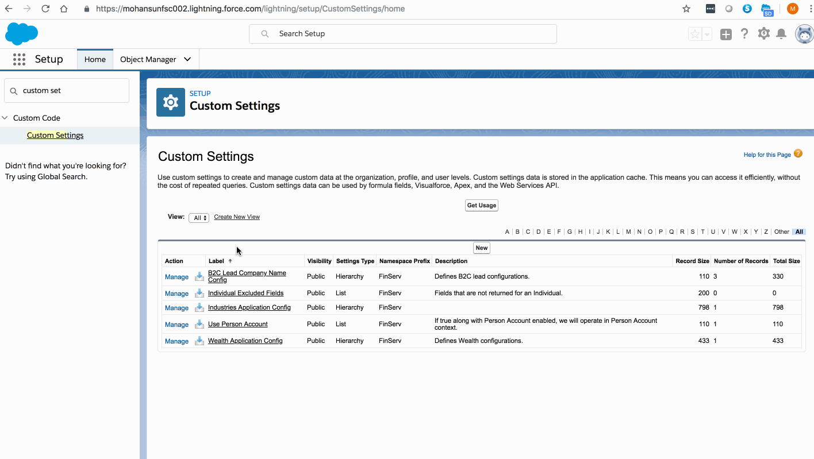
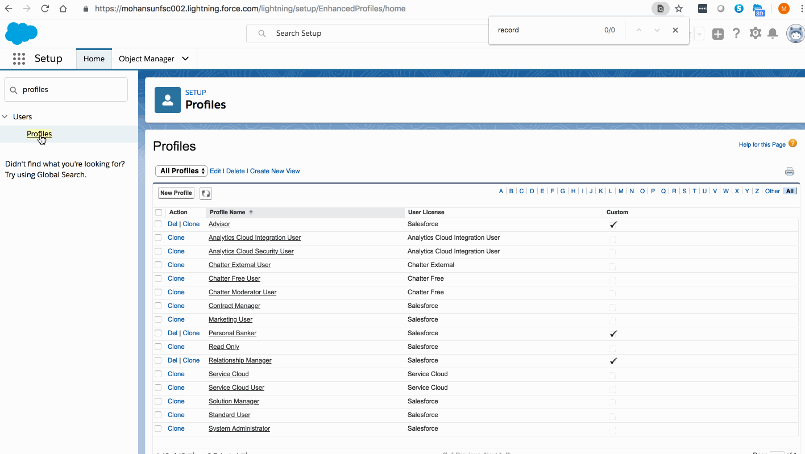
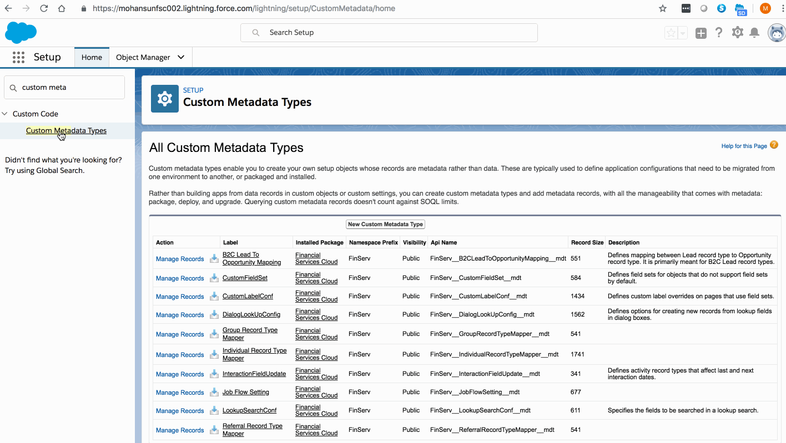
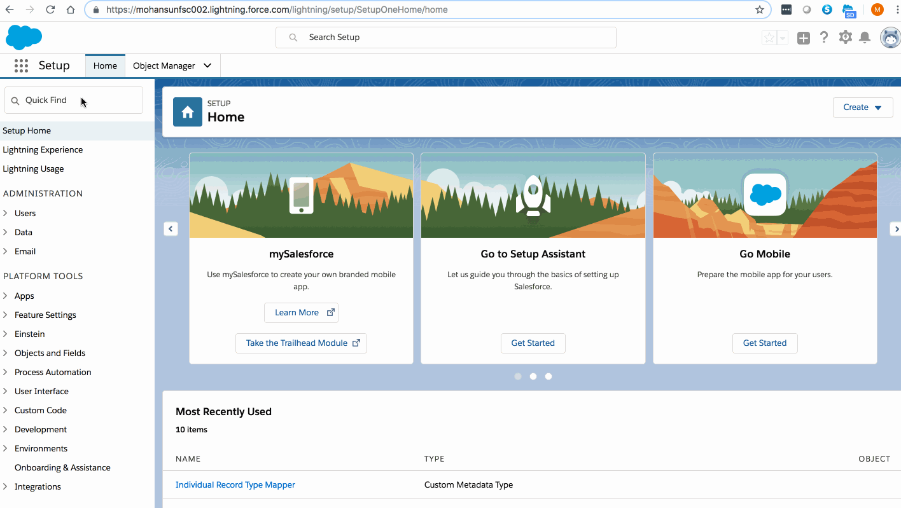

FSC Setup Demos
Enable Person Account
Profile Setup
Custom Metadata Type - RecordType setting
Lead Conversion setting for Person Accounts
Enable Person Account

Profile Setup

Custom Metadata Type - Recordtype setting

Lead Conversion setting for Person Accounts
